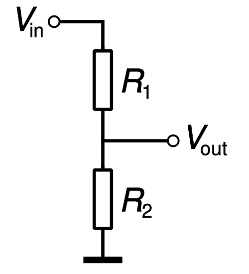

Voltage Divider

This project demonstrates how the same simple Voltage Divider circuit, attached to a Shrimp's Analog input can be used to monitor many different sensors, measuring the following items which are available as part of an Addon kit of sensors that we ship for £1.50 retail, but which can easily be sourced for yourself...
- Temperature (Thermistor)
- Light (Light Dependent Resistor)
- Rotation (Potentiometer)
- Pressing (Button)
- Orientation (Tilt Switch)
- Albedo (Reflectance Sensor)
- Human touch (Human Skin)
Each of these items behaves like a variable resistor, so if you chain the item in series with another resistor, the voltage measured in between them will vary as the share of resistance changes.
Using the Arduino Analog Input example, we can then get the Shrimp to report the changing voltage value over the Serial link to your laptop.
It is also possible to treat the Shrimp as an 'IO Board' and query and control its pins from Javascript or Python
Self-sourced resistive sensors
Although we have bundled a collection of the cheapest available resistive sensors in our kit, the following can also be sourced (below listed with indicative bulk cost per unit if you source for yourself from a wholesaler)
- 2-axis Joystick $0.60
- Humidity Sensor ~$0.80
- Weight Sensor ~$1.00
- Slide potentiometer/fader $1.00
- Resistive touchscreen digitizer $3
- Flex Sensor ~$8
- Membrane Potentiometer ~$10
- Motorized slide potentiometer/fader ~$30
The Persistence of Vision circuit uses software control of a column of just eight LEDs waved in front of the eye to create a 'virtual screen' eight pixels high and many pixels across. The battery-powered Shrimp turns on and off the eight LEDs incredibly quickly as you wave the breadboard circuit in the air to draw letters, numbers and simple icons.
The illusion is visible to the naked eye, but in combination with a long-exposure camera, you can use this circuit to create light-paintings overlaying messages and images over real-world scenes.